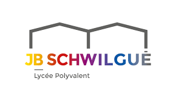

Qui je suis
Je m'appelle Alexis STOCK, j'ai 18 ans et J’habite à Thanvillé depuis 3 ans. Thanvillé se situe dans la vallée à environ 15 minutes de Sélestat.
J'aime beaucoup faire du sport et j'en fait très souvent et je passe aussi pas mal de temps à jouer aux jeux vidéo.
Mon Parcours Durant Lycée

Durant la période 2020 – 2023, j'ai fait mes études au lycée Jean-Baptiste Schwilgué à Sélestat. J'y ai passé mon baccalauréat avec les options Mathématiques, Numérique et sciences informatiques(NSI) et sciences de l'ingénieur (SI) que j'ai abandonnées en terminale.
Pourquoi Réseaux et Télécoms ?
J'ai choisi d'aller en Réseaux et Télécommunication, car j'ai commencé à m'intéresser à l'informatique depuis le lycée en prenant l'option NSI ou j'ai appris certaines bases de l'informatique. Ce qui ma permit d'apprendre que le domaine de la sécuriter informatique était un domaine dans le quels je voulais évoluer